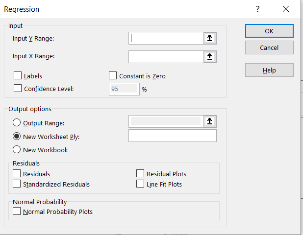

Manuel Schuler 19.01.2020
Explanation for QM Project
Task: Predict the amount of bikes rented each hour for the days 16-19. The data are in the test sample ?
To build the model use the train data (days 1-15).
Step by Step Procedure: (make sure you write what you are doing in the report + findings)
Find out which variables are relevant. For each variable do the following:
Do a regression (Table 1)
- Go into train data
- Select data, data analysis, regression
- Select as y the count (M1:M8601 in my case)
- Select as x input the variable of interest (e.g. I1:I8601 for humidity)
- Check box: label if your selected column contains a title (e.g. count)
- Check box: Line Fit plots
- Make sure you select new tabellenblatt)
Analyse the result for this variable
- Look at the R2 (cell B5): no linear relationship if value is about 0.2 or lower
- Look at the line fit plot whether a linear relationship seems reasonable.
Pivot Table: You might also want to look at the variable via a pivot table:
- Select all the train data in the train sample
- Insert, pivot table (make sure you select “New worksheet”)
- Drag the variable you want to know about in the ”Rows“ section
- Drag count in the “values” section
- Select the arrow next to “values”
- Value Field section, average or sum
- Can use Pivot graph to display if you prefer a graphic representation
Decide which variables are relevant based on the above analysis
Time Analysis
- Do the regression for time
- You will find that Time does not obey linear dependence
- easiest solution: Do separate regressions for each of the 24 time variables.
- If this is too much work: combine times into time buckets according to similar counts.
- Suppose you want the following times into 1 basket: times 0:00:00, 01:00:00, 02:00:00, 04:00:00, 05:00:00, because the count is very similar for all these times and we can do 1 regression for all these times.
- Click any cell in the first row then select filter under data
- In the time column deselect all and check the times you want to include your first time bucket (see 21)
- Copy paste only the selection into a new worksheet: “Ctrl A”, “Ctrl C”. Add a new worksheet and “Ctrl V”.
- Make sure the final variables you want to include are all next to each other
- Rename Worksheet and do a regression in this worksheet as above. Assuming you have 2000 entries the input y range is M1:M2000.
- For the input x range include all the variables you want in your final regression model.
- Example: If atemp and humidity are your independent variables and they are next to each other (have to be) in columns J and K, then input x range is J1:K2000.
- The R^2 value is in the “R square” cell. The intercept and the coefficients are also stated in B17, B18, B19. For the example above: count = intercept + atemp-coefficient*atemp + humidity-coefficient*humidity
- Write down the equation and repeat for your other time buckets
- For the prediction (test sample) you have to check (using if statements or a lookup table or split the test sample into the time buckets each a different spreadsheet) which time basket the time belongs to and then use the corresponding formula.
- Some details for the If method:
=IF(OR(HOUR(B2)=0;HOUR(B2)=1;HOUR(B2)=2);"Time bucket 1";"Other time buckets"). This checks which hours are in the first time bucket. Replace “Time bucket 1” with the formula for the first time bucket. Replace other time buckets with further if statements like above
- Some details on Splitting test sample into the corresponding times of your time bucket: insert the formula in 29) for count. Finally you might want to combine the different worksheets into one. 
Table 1